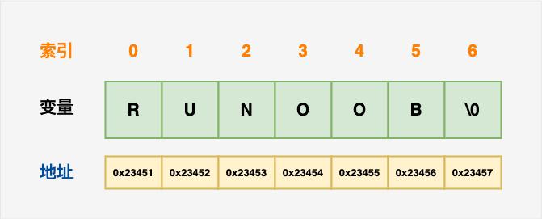

C++ 文字列
C++ には、次の2種類の文字列表現が用意されています：
- C スタイル文字列
- C++ で導入された string クラス型
C スタイル文字列
C スタイルの文字列は C 言語に由来し、C++ でも引き続きサポートされています。文字列は実際にはnull文字\0で終わる1次元の文字配列です。したがって、null で終わる文字列には、その文字列を構成する文字が含まれます。
次の宣言と初期化は、あるRUNOOB文字列を作成します。配列の末尾に空文字が格納されているため、文字配列のサイズは単語RUNOOBの文字数より1つ多くなります。
char site[7] = {'R', 'U', 'N', 'O', 'O', 'B', '\0'};
配列の初期化規則に従って、上記の文は次のように書くこともできます：
char site[] = "RUNOOB";
以下は、C/C++ で定義されている文字列のメモリ表現です：

実は、あなたはnull文字を文字列定数の末尾に置く必要はありません。C++ コンパイラは配列を初期化するときに、自動的に\0を文字列の末尾に置きます。
例
上記のコードをコンパイルして実行すると、次の結果が生成されます：
菜鸟教程: RUNOOB
C++ には、null で終わる文字列を操作するための関数が多数あります：
| 番号 | 関数 & 目的 |
|---|---|
| 1 | strcpy(s1, s2); 文字列 s2 を文字列 s1 にコピーします。 |
| 2 | strcat(s1, s2); 文字列 s2 を文字列 s1 の末尾に連結します。文字列の連結には++ 記号も使用できます。例： string str1 = "runoob"; string str2 = "google"; string str = str1 + str2; |
| 3 | strlen(s1); 文字列 s1 の長さを返します。 |
| 4 | strcmp(s1, s2); s1 と s2 が同じ場合は 0 を返します。s1<s2 の場合は 0 より小さい値を返し、s1>s2 の場合は 0 より大きい値を返します。 |
| 5 | strchr(s1, ch); 文字列 s1 内の文字 ch が最初に現れる位置を指すポインタを返します。 |
| 6 | strstr(s1, s2); 文字列 s1 内の文字列 s2 が最初に現れる位置を指すポインタを返します。 |
以下の例では、上記の関数の一部を使用しています：
例
上記のコードをコンパイルして実行すると、次の結果が生成されます：
strcpy( str3, str1) : runoob strcat( str1, str2): runoobgoogle strlen(str1) : 12
C++ の String クラス
C++ 標準ライブラリはstringクラス型を提供し、上記のすべての操作をサポートするほか、さらに多くの機能も追加されています。この C++ 標準ライブラリのクラスを学習します。まず、次の例を見てみましょう：
まだこの例を完全に理解できていないかもしれません。これまでのところ、クラスとオブジェクトについて説明していないためです。そのため、今はこの例をざっと見るだけで構いません。オブジェクト指向の概念を理解した後に、もう一度この例に戻って理解してください。
例
上記のコードをコンパイルして実行すると、次の結果が生成されます：
str3 : runoob str1 + str2 : runoobgoogle str3.size() : 12その他の拡張
小马
129***2060@qq.com
string クラスは、文字列に対する一連の操作を提供します。例：
以下は string クラスに関する例です：
#include <iostream> #include <string> using namespace std; int main() { //定义一个string类对象 string http = "www.runoob.com"; //打印字符串长度 cout<<http.length()<<endl; //拼接 http.append("/C++"); cout<<http<<endl; //打印结果为：www.runoob.com/C++ //删除 int pos = http.find("/C++"); //查找"C++"在字符串中的位置 cout<<pos<<endl; http.replace(pos, 4, ""); //从位置pos开始，之后的4个字符替换为空，即删除 cout<<http<<endl; //找子串runoob int first = http.find_first_of("."); //从头开始寻找字符'.'的位置 int last = http.find_last_of("."); //从尾开始寻找字符'.'的位置 cout<<http.substr(first+1, last-first-1)<<endl; //提取"runoob"子串并打印 return 0; }小马
129***2060@qq.com
自娱、自乐
183***3822@qq.com
C++ には入力方法が実はまだたくさんあります。次に、C 言語の getchar() に似たものを紹介します。
cin.getline()これは、一連の文字を入力し終えた後にデータの読み取りを開始します（注意：入力が完了した後、Enter を終了フラグとします）
以下は一例です：一連の文字を入力し、その中の数字の個数と英字の個数をプログラムで統計します。入力する文字は#を終了フラグとします。
#include<iostream> using namespace std; #define N 100 int main() { char X[N]; cin.getline(X,N); //以cin.getline形式输入 int a=0,b=0; for(int i=0;i<N;i++) { if(X[i]=='#') //为#为结束标志 break; if(X[i]>='0'&&X[i]<='9') a++; //统计数字个数 if((X[i]>='a'&&X[i]<='z')||(X[i]>='A'&&X[i]<='Z')) b++; //统计英文字母个数 } cout<<a<<endl<<b<<endl; return 0; }自娱、自乐
183***3822@qq.com
lhshengshi
510***747@qq.com
文字列と vector
文字列リテラルと標準ライブラリの string は同じ型ではありません
string s("hello"); cout<<s.size()<<endl; //OK cout<<"hello".size()<<endl; //ERROR cout<<s+"world"<<endl; //OK cout<<"hello"+"world"<<endl; //ERROR文字列の長さを求める strlen、sizeof、size() の違い
cout<<strlen("123")<<endl; //返回 3 cout<<sizeof("123")<<endl; //返回 4 string s = "123"; cout<<s.size()<<endl; //返回 3標準 string ライブラリの getline 関数は、戻る際に改行文字を破棄します。const iterator と const_iterator の違い
vector の長さを変更する操作はすべて、既存のイテレータを無効にします。例：push_back を呼び出した後は、vector を指すイテレータを信頼できなくなります。
lhshengshi
510***747@qq.com
WOWTOT
573***580@qq.com
参考URL
これまで sizeof と strlen の区別がよくわからなかったのですが、最近調べたところ：
1、sizeof 演算子の結果型は size_t で、ヘッダーファイルで unsigned int 型として typedef されています。この型は、実装が作成できる最大のオブジェクトのバイトサイズを保持できることが保証されています。
2、sizeof は演算子であり、strlen は関数です。
3、sizeof は型を引数として使用できます。strlenのみ使用できますchar*を引数とする場合、かつ\0で終わる必要があります。
sizeof は関数を引数として使用することもできます。例：
short f(); printf("%d\n", sizeof(f()));出力結果は sizeof(short)、つまり 2 です。
4、配列はsizeofの引数としても退化しません。しかし、strlen渡すとポインタに退化します。
5、ほとんどのコンパイラはコンパイル時にsizeofを計算し、それは型または変数の長さです。これがsizeof(x)を使用して配列の次元を定義できる理由です。
6、strlen の結果は実行時にしか計算できません。文字列の長さを計算するために使用され、型が占めるメモリサイズではありません。
7、sizeof の後が型の場合は括弧が必要ですが、変数名の場合は括弧を付けなくても構いません。これはsizeofsizeof が演算子であり関数ではないためです。
8、構造体型または変数に適用する場合、sizeof は実際のサイズを返します。静的配列に適用する場合、sizeof は配列全体のサイズを返します。sizeof 演算子は、動的に割り当てられた配列や外部の配列のサイズを返すことはできません。
配列を引数として関数に渡すとき、渡されるのは配列ではなくポインタであり、配列の先頭アドレスが渡されます。例：
これらはすべて等価です。
C++ では、配列のパラメータ渡しは常に配列の先頭要素を指すポインタを渡すことであり、コンパイラは配列のサイズを知りません。
関数内で配列のサイズを知りたい場合は、次のようにする必要があります：
関数に入った後に memcpy でコピーし、長さは別の仮引数で渡します。
fun(unsiged char *p1, int len) { unsigned char* buf = new unsigned char[len+1] memcpy(buf, p1, len); }上記の詳しい説明を見ると、両者の使用にはやはり違いがあることがわかります。この例からはっきりと確認できます：
上記は静的配列を処理した結果です。ポインタの場合は、結果は異なります。
WOWTOT
573***580@qq.com
参考URL
dx_djh
a14***40357@163.com
文字配列は配列名を使って cout で配列の内容を出力できるのに、通常の配列ではできない理由について。
まず例を示します：
int a[10] = {1,2,3,6,7}; char b[6] = {'h','a','p','p','y','\0'}; char c[] = "happy"; cout<<a<<endl; cout<<b<<endl; cout<<c<<endl;出力結果は次のとおりです：
上記の例からわかるように、通常の配列では配列名を cout で出力しても、アドレスの羅列が得られるだけです。文字配列の場合は、配列の内容が出力されます。
では、なぜこうなるのでしょうか？
答え：なぜならcharchar 型配列の各要素は 1 バイトなので、各文字のアドレスは +1 で連続しています。そのため、cout が出力するときに文字配列内の\0を読み取ると出力を停止します。一方、int 配列の各要素は 4 バイトを占めるため、配列内の各要素のアドレスの間隔は 4 ですが、それも実際には連続しています。文字化けが発生するのは終了文字が見つからないためです。
dx_djh
a14***40357@163.com
戒空
116***0329@qq.com
Vs2017 で strcpy を使用するとエラーが発生します。strcpy は安全ではないため、strcpy_s で置き換える必要があると表示されます。
#include "pch.h" #include <iostream> #include <cstring> using namespace std; int main() { char str1[11] = "hello"; char str2[12] = "world"; char str3[11]; int len; //复制str1到str2 strcpy_s(str3, str1); cout << "strcpy(str3, str1):" << str3 << endl; return 0; }戒空
116***0329@qq.com
maxven
max***@qq.com
<cstring> 作成詳解
#include<iostream> #include<algorithm> #include<cmath> #include<cstring> #include<cstdio> using namespace std; int main() { //1. 字符串的创建 cout<<"第一:字符串的创建!\n\n"; string a(4,'a'); cout<<"1.以 a 为原字符 4单位大小\n\n"; cout<<"string a(4,'a');\ncout<<a<<endl;\n"; cout<<a<<endl<<endl; cout<<"2.任意大小的字符串\n\n"; cout<<"string b(\"bbbbbb\");\ncout<<b<<endl;\n"; string b("bbbbbb"); cout<<b<<endl<<endl; cout<<"3.把某一字符串的某一部分\n(0位置开始4个长度)给c\n\n"; cout<<"string c(a,0,4) ;\ncout<<c<<endl;\n"; string c(a,0,4) ; cout<<c<<endl<<endl; cout<<"4. 10长度原长度不足补*;\n\n"; cout<<"c.resize(10,'*');\ncout<<c<<endl;\n"; c.resize(10,'*'); cout<<c<<endl<<endl; system("pause"); system("cls"); return 0; }maxven
max***@qq.com
maxven
max***@qq.com
参考アドレス
<cstring> assign()、copy() 詳解:
#include<iostream> #include<algorithm> #include<cmath> #include<cstring> #include<cstdio> using namespace std; int main() { cout<<"第二: 字符串的赋值 assign();"<<endl; cout<<"1.感觉就像是append不过是抹除-覆盖\n"; cout<<"string e;\nchar f[10]=\"123456\"\ne.assign(f);\ne+=' ';\ncout<<e<<endl<<endl;\n"; string e; char f[10]="123456"; e.assign(f); e+=' '; cout<<e<<endl<<endl; cout<<"2.string区间 赋值都类似吧\n"; cout<<"e.assign(f,3,3);\ne+=' ';\ncout<<e<<endl<<endl;\ne.assign(f,3);\ncout<<e<<endl;\n"; e.assign(f,3,3); e+=' '; cout<<e<<endl; e.assign(f,3); cout<<e<<endl<<endl; cout<<"3.某字符串char型 全部\n"; cout<<"char ssr[10]=\"asdqwezxc\";\ne.assign(ssr);\ncout<<ssr<<endl;\n"; char ssr[10]="asdqwezxc"; e.assign(ssr); cout<<ssr<<endl<<endl; cout<<"4.某字符串char型 前num个\n"; cout<<"e.assign(ssr,4);\ncout<<e<<endl;\n"; e.assign(ssr,4); cout<<e<<endl<<endl; cout<<"5.某字符赋值\n"; cout<<"赋值3个6\n"; e.assign(3,'6'); cout<<e<<endl<<endl; cout<<"copy() 将d中的2位置开始的12个字符覆盖到char型数组ss上\n 必须为-> char型 <-否则报错"; cout<<" char ss[10]=\"123\";\n string dd;\nd.copy(ss,12,2);\ncout<<ss<<endl;\n"; char ss[15]="123"; string dd("abcdefghijklmn"); dd.copy(ss,12,2); cout<<ss<<endl<<endl; system("pause"); system("cls"); return 0; }maxven
max***@qq.com
参考アドレス
maxven
max***@qq.com
<cstring> append() 詳解とその拡張(int, char):
#include<iostream> #include<algorithm> #include<cmath> #include<cstring> #include<cstdio> using namespace std; int main() { cout<<"第三: 字符串的添加与复制 append();\nstring d(a);\ncout<<d<<endl;\n//或者 d=d+a;/nd.append(b);\n"; cout<<"1.在d的末尾添加字符串a\n\n"; string d(a); d.append(b); cout<<d<<endl<<endl; cout<<"2.在d的末尾添加字符串/nb(0位置开始,2个长度)的数据\n\n"; cout<<"d.append(b,0,2);\ncout<<d<<endl;\n"; d.append(b,0,2); cout<<d<<endl<<endl; cout<<"3.添加4个 ~ 字符\n\n"; cout<<"d.append(4,'~');\n"; cout<<"cout<<d<<endl<<endl;\n"; d.append(4,'~') ; cout<<d<<endl<<endl; system("pause"); system("cls"); cout<<"4. int 与 char 型添加 (好高兴自己想到的int ^_^ )\n"; cout<<"char app[100]=\"aaabbb\";"; cout<<"\nstring charr(\"-_-\");\n"; cout<<"charr.append(app);\ncout<<charr<<endl\n"; char app[100]="aaabbb"; string charr("-_- "); charr.append(app); cout<<charr<<endl<<endl; cout<<"charr.append(app,4);\ncout<<charr<<endl<<endl;\n"; charr.append(app,4); cout<<charr<<endl<<endl; cout<<"char型数组全部,char型数组的前4个\n\n****如果要添加中间***\n"; cout<<"string tmp;\nstring tmp;tmp.assign(app);\ncharr.assign(\"\");\ncharr.append(tmp,1,4);\ncout<<charr<<endl<<endl;\n"; string tmp; tmp.assign(app); charr.assign(""); charr.append(tmp,1,4); cout<<charr<<endl<<endl; cout<<"5.int double 等等 通过 sprintf() <cstdio>作为转接\n"; cout<<"int aaa=15314;\ndouble bbb=3.1415;\nchar aa[10];\nsprintf(aa,\"%d\",aaa);\ncharr.append(aa,0,4);\nsprintf(aa,\"%f\",bbb);\ncharr.append(aa,0,4);\ncout<<charr<<endl;\n"; int aaa=15314; double bbb=3.1415; char aa[10]; sprintf(aa,"%d",aaa); charr.append(aa,0,4); sprintf(aa,"%f",bbb); charr.append(aa,0,4); cout<<charr<<endl<<endl; system("pause"); system("cls"); return 0; }maxven
max***@qq.com
阳平
yua***ongtt@163.com
参考アドレス
C++ における一般的な文字列入力のいくつかの方法は次のとおりです：
cin、cin.get()、cin.getline()、getline()、gets()、getchar()
1. cin>>
使い方1：最も一般的で最も基本的な使い方です。数字を入力します：
#include <iostream> using namespace std; int main () { int a,b; cin>>a>>b; cout<<a+b<<endl; } //输入：2[回车]3[回车] //输出：5 使い方2：文字列を受け取ります。「スペース」、「Tab」、「Enter」に遭遇すると終了します
#include <iostream> using namespace std; int main () { char a[20]; cin>>a; cout<<a<<endl; } //输入：jkljkljkl //输出：jkljkljkl //输入：jkljkl jkljkl //遇空格结束，所以不能输入多个单词 //输出：jkljkl2. cin.get()
使い方1：cin.get(文字変数名) は文字を受け取るために使用できます
#include <iostream> using namespace std; int main () { char ch; ch=cin.get(); //或者cin.get(ch);只能获取一个字符 cout<<ch<<endl; } //输入：jljkljkl //输出：j使い方2：cin.get(文字配列名, 受け取る文字数) は一行の文字列を受け取るために使用でき、スペースも受け取ることができます
#include <iostream> using namespace std; int main () { char a[20]; cin.get(a,20); //有些类似getline。可以输入多个单词，中间空格隔开。 cout<<a<<endl; } //输入：jkl jkl jkl //输出：jkl jkl jkl //输入：abcdeabcdeabcdeabcdeabcde （输入25个字符） //输出：abcdeabcdeabcdeabcd （接收19个字符+1个'\0'） 使い方3：cin.get(パラメータなし) はパラメータがなく、主に入力ストリーム内の不要な文字を捨てるため、または改行を捨てるために使用され、cin.get(文字配列名, 受け取る文字数) の不足を補います。
#include <iostream> using namespace std; int main(void) { char arr[10]; cin.get(arr,10); cin.get();//用于吃掉回车，相当于getchar(); cout<<arr<<endl; cin.get(arr,5); cout<<arr<<endl; system("pause"); return 0; } //输入abcdefghi //输出abcdefghi //输入abcde //输出abcd //请按任意键继续#include <iostream> using namespace std; int main(void) { char arr[10]; cin.get(arr,10); //cin.get();//用于吃掉回车，相当于getchar(); 现在把这行注释掉试试看 cout<<arr<<endl; cin.get(arr,5); cout<<arr<<endl; system("pause"); return 0; } //输入abcdefghi //输出abcdefghi //请按任意键继续3.cin.getline()
cin.getline(): 文字列を受け取り、スペースを受け取って出力できます
#include <iostream> using namespace std; int main () { char m[20]; cin.getline(m,5); //与上面基本相同。 cout<<m<<endl; } //输入：jkljkljkl //输出：jkljm に5文字を受け取りますが、最後の1つは '\0' のため、4文字しか出力されません；
5を20に変更した場合：
発展：
cin.getline() は実際には3つのパラメータがあります。cin.getline(文字列をmに受け取る, 受け取る個数5, 終了文字)
3番目のパラメータを省略した場合、システムのデフォルトは '\0' ですが、'/n' ですよね。
例の中の cin.getline() を cin.getline(m,5,'a') に変更した場合、jlkjkljkl を入力すると jklj が出力され、jkaljkljkl を入力すると jk が出力されます
多次元配列で使用する場合も、cin.getline(m[i],20) のような使い方ができます：
#include<iostream> #include<string> using namespace std; int main () { char m[3][20]; for(int i=0;i<3;i++) { cout<<"\n请输入第"<<i+1<<"个字符串："<<endl; cin.getline(m[i],20); } cout<<endl; for(int j=0;j<3;j++) cout<<"输出m["<<j<<"]的值:"<<m[j]<<endl; }テスト：
4. getline()
getline() ：文字列を受け取り、スペースを受け取って出力でき、インクルードが必要です#include<string>。
#include<iostream> #include<string> using namespace std; int main () { string str; getline(cin,str); cout<<str<<endl; } テスト：
cin.getline() に似ていますが、cin.getline() は istream ストリームに属し、getline() は string ストリームに属する、異なる2つの関数です
5. gets()
gets()：文字列を受け取り、スペースを受け取って出力でき、インクルードが必要です#include<string>。
#include<iostream> #include<string> using namespace std; int main () { char m[20]; gets(m); //不能写成m=gets(); cout<<m<<endl; }テスト：
cin.getline() の中のある例と同様に、gets() も多次元配列で使用できます：
#include<iostream> #include<string> using namespace std; int main () { char m[3][20]; for(int i=0;i<3;i++) { cout<<"\n请输入第"<<i+1<<"个字符串："<<endl; gets(m[i]); } cout<<endl; for(int j=0;j<3;j++) cout<<"输出m["<<j<<"]的值:"<<m[j]<<endl; }テスト：
個人的には gets() と cin.getline() の使い方はとても似ていると思います。ただ、cin.getline() の方がパラメータが1つ多いだけです；
ここでついでに説明しておくと、この記事の kskr1,kskr2,kskr3 の例は、cin>> にも適用できます。理由はここで入力されたものにはスペースがないからです。もしスペースが入力された場合、例えば「ks kr jkl[Enter]」なら、cin はすでに3つの文字列「ks,kr,jkl」を受け取ってしまいます。また「kskr 1[Enter]kskr 2[Enter]」なら、「kskr,1,kskr」を受け取ります。これは私たちが望む結果ではありません！一方、cin.getline() と gets() はスペースを受け取ることができるので、このエラーは発生しません；
6.getchar()
getchar() ：1文字を受け取り、インクルードが必要です#include<string>。
#include<iostream> using namespace std; int main () { char ch; ch=getchar(); //不能写成getchar(ch); cout<<ch<<endl; } テスト：
getchar() はC言語の関数で、C++ でも互換性がありますが、できるだけ使わないか、使用を控えるべきです；
阳平
yua***ongtt@163.com
参考アドレス
周大侠
277***091@qq.com
@dx_djh
整数配列についての説明は誤りです。整数配列に終端文字を追加しても、cout が出力するのはアドレスです。これはC++の仕組みです。配列が char 型の場合のみ、cout で配列名を出力すると内容が出力され、他の型の場合はすべてアドレスが出力されます。
周大侠
277***091@qq.com
秋叶
251***7981@qq.com
生文字列(C++11)
R"(文字列)"デフォルト形式の生文字列であり、生文字列内の文字はエスケープされません。#include<iostream> using namespace std; int main () { cout << R"(原始\t字\n符串)" << endl; return 0; }出力:
カスタム区切り文字
区切り文字はカスタマイズ可能で、括弧の外側に書きます。左右を一致させる必要があります。すべての文字が区切り文字に設定できるわけではありません：
#include<iostream> using namespace std; int main () { cout << R"#%^&*(1231)"123)#%^&*" << endl; return 0; }出力:
文字列プレフィックス：
例：
#include<iostream> using namespace std; int main () { wcout << L"Unicode 字符串" << endl; //控制台字符类型为Unicode时，正常输出 wcout << u"utf-16 字符串" << endl; //wcout 不支持的类型，输出地址 wcout << U"utf-32 字符串" << endl; //wcout 不支持的类型，输出地址 cout << u8"utf-8 字符串" << endl; //控制台字符类型为UTF-8时，正常输出 return 0; }出力:
文字列プレフィックスと生文字列の組み合わせ：
#include<iostream> using namespace std; int main () { wcout << LR"(\t字\b符\r串\n)" << endl; return 0; }出力:
秋叶
251***7981@qq.com
Yingfan
yin***nzhou@outlook.com
菜鸟教程には明確に説明されていない点があります。すなわち、Cスタイルの文字列における strcmp(s1, s2) 関数の使用についてです。菜鸟教程では次のように説明されています
strcmp(s1, s2);
s1 と s2 が同じ場合は 0 を返します。s1<s2 の場合は戻り値が 0 より小さくなります。s1>s2 の場合は戻り値が 0 より大きくなります。
しかし実際にはより正確に言うと、2つの文字列が一致せず、かつ最初の文字列の最初の文字が2番目の文字列の最初の文字より小さい場合にのみ 0 より小さい値を返し、逆の場合は 0 より大きい値を返します。
Yingfan
yin***nzhou@outlook.com
上帝也代码
717***589@qq.com
1つ共有しますconst char配列とconst char*配列、およびint配列ポインタ出力の例。
#include <iostream> using namespace std; void main() { //const char的变 const char aa[8] = "abcdefg"; const char* bb = "1234567"; cout << bb << endl; //输出1234567 cout << *bb << endl; //输出1 cout << bb+1 << endl; //输出234567 cout << *(bb + 1) << endl; //输出2 cout << (*bb + 2) << endl; //bb指针地址123456，指向的内容为1，所以*bb='1',1的ASCII为49，所以输出(*bb + 2)=51 cout << "--------------" << endl; const char *charp, *charp2; cout << aa<< endl; //输出abcdefg cout << *aa << endl; //输出a charp = aa; //此时如果调用cout << charp << endl;输出abcdefg；调用cout << *charp << endl;输出a charp=&aa[0]; charp2= &aa[1]; //charp2为const char*指向aa[1]='b'字符，调用*charp2输出b，但是调用charp2将会输出bcdefg cout << *charp << endl; //输出字符a cout << charp << endl; //输出字符串abcdefg cout << *charp2 << endl;//输出字符b cout << charp2 << endl; //输出字符串bcdefg cout << "--------------" << endl; int i[5] = { 1,2,3,4,5 }; int *ip, *ip2; ip = i; cout << i << endl;//输出00CFFE44地址 cout << *i << endl;//输出数值1 cout << ip << endl; //输出00CFFE44地址，地址指向的内容为数值1 cout << *ip << endl; //输出数值1 system("pause"); }上帝也代码
717***589@qq.com